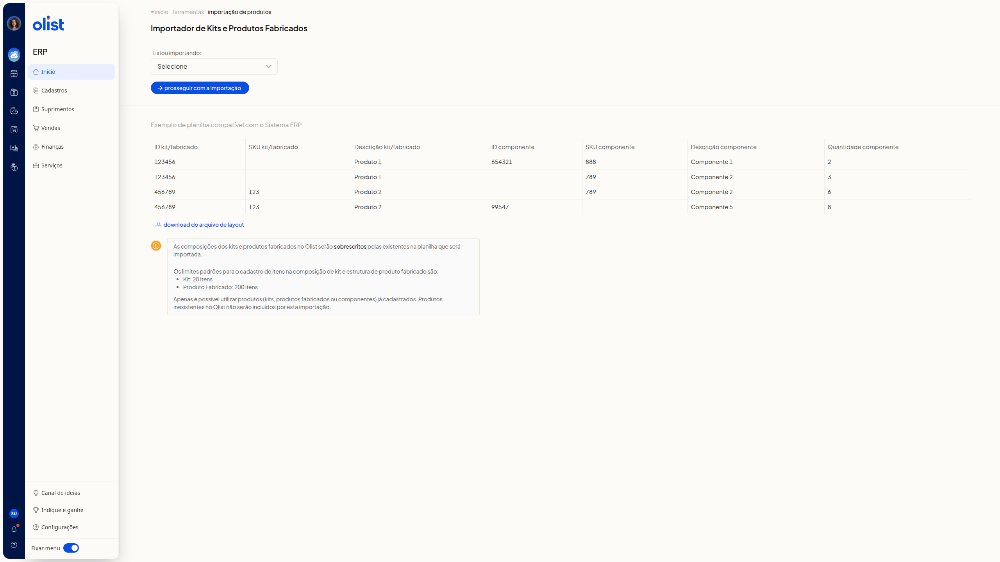
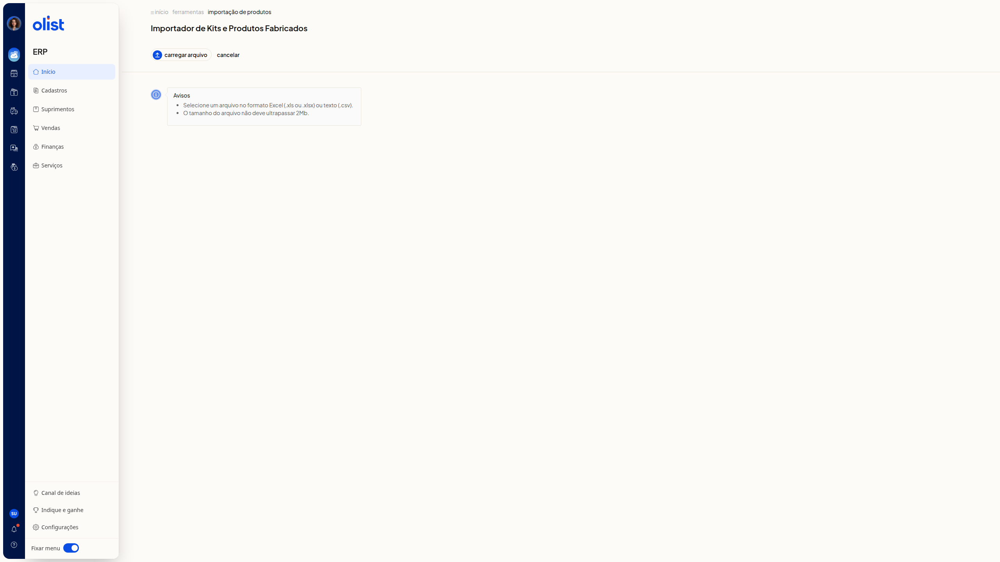

Importar planilha de composições de kits e estrutura dos produtos fabricados
Descrição
A página Importador de Kits e Produtos Fabricados do ERP da Olist permite escolher se a importação é de kits ou de produtos fabricados, consultar um exemplo de planilha compatível, baixar o arquivo de layout e avançar para a etapa de carregar o arquivo.
A planilha modelo e as regras exibidas são as mesmas para as duas opções. Acesse início > ferramentas > importação de produtos.
Importante
Leia estes avisos antes de carregar a planilha.
- As composições dos kits e produtos fabricados no Olist serão sobrescritas pelas existentes na planilha que será importada.
- Os limites padrões para o cadastro de itens na composição de kit e estrutura de produto fabricado são 20 itens para kit e 200 itens para produto fabricado.
Confira os pré-requisitos a seguir.
Pré-requisitos
- Você precisa ter permissão de importação de registros e permissão para incluir e editar produtos. O suporte também acessa o Importador de Kits e Produtos Fabricados.
- Os kits, produtos fabricados e componentes usados na planilha precisam já estar cadastrados. Produtos inexistentes no Olist não serão incluídos por esta importação.
- A planilha deve seguir o exemplo exibido na página.
- Na etapa de carregamento, o arquivo deve ser Excel (.xls ou.xlsx) ou texto (.csv), com tamanho de até 2Mb.
Em seguida, consulte a planilha modelo e avance para carregar o arquivo.
Instruções
Consultar a planilha modelo e as regras
-
Acesse início > ferramentas > importação de produtos.
-
Escolha Kits ou Produtos Fabricados no campo Estou importando:. As opções são Selecione, Kits e Produtos Fabricados. O campo não é obrigatório. O exemplo de planilha e as regras permanecem os mesmos.

-
Consulte a tabela Exemplo de planilha compatível com o Sistema ERP. Nenhuma coluna é obrigatória:
- ID kit/fabricado
- SKU kit/fabricado
- Descrição kit/fabricado
- ID componente
- SKU componente
- Descrição componente
- Quantidade componente
- Clique em download do arquivo de layout se quiser o arquivo.
- Leia o aviso de que as composições serão sobrescritas, os limites de itens e a regra de usar apenas produtos já cadastrados. Você vê o layout da planilha, um exemplo com quatro linhas e as regras da importação.
Avançar até a tela de carregar arquivo
-
Selecione Kits ou Produtos Fabricados em Estou importando:.
-
Clique em prosseguir com a importação.
-
Leia a seção Avisos. Clique em Carregar arquivo quando for escolher a planilha em Excel (.xls ou.xlsx) ou texto (.csv), com até 2Mb. Cancelar volta à tela anterior, com o exemplo de planilha e o campo Estou importando:. A tela mostra Carregar arquivo, Cancelar e os avisos de formato e tamanho.

Links relacionados
Se precisar de ajuda, fale com o suporte.